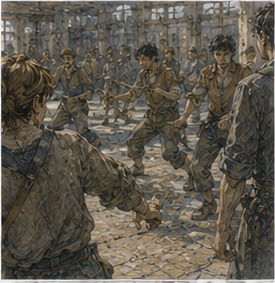

Pessa hit Alden in the face with a stick. Not hard. Enough. I laughed. Alden turned toward me.
“That was your fault.”
“You invited me.”
“You distracted me.”
“You were looking at her.”
“I heard you.”
“I didn't say anything.”
“You laughed.”
“After.”
Pessa lowered the padded practice staff.
“Again.”
Alden looked at her. Then at me. Then correctly decided Pessa was the more immediate problem. Good. I had come. That had required three decisions before breakfast. First, wound. Dry. No heat. No spreading redness.
Swelling low enough after yesterday's archive work and controlled stairs that Nerin had no objection to ground-floor activity. Second, stairs. I was already downstairs because I had slept downstairs after the archive day? No. I had slept upstairs, then descended that morning for wound check. Right. One controlled descent. Keeper spotting. Sit once. Still. Third, south training yard. Packed dirt. Chair brought.
Cart both ways. No training. Watch. I could do that. Alden had sent a boy at second bell with a note.
COMING?
I wrote:
YES. CHAIR.
The boy looked at it.
“He said you'd say maybe.”
“Tell him he's wrong.”
This improved the morning.
*
The south training yard was larger than I remembered. Or I had never been here. Memory. Old Greg knew yards. Young Greg had trained in some. This one? Maybe. Packed dirt surrounded by low fence. Weapon racks under a lean-to. Three practice circles marked with chalk and old boot scuffs. A water barrel. Two benches, both occupied. No permanent chair. Alden had remembered.
There was a chair beside the nearest circle. Bad chair. One leg shorter. I tested it. Pessa watched.
“Problem?”
“Chair.”
“It is a chair.”
“Debatable.”
Alden shoved a folded scrap of leather under short leg. Stable.
“Fixed.”
I sat. Good. Pessa looked exactly like someone who had already been working before I arrived. Sleeves rolled. Hair tied back. Practice staff. No ceremony.
“You watching?”
“Yes.”
“Then watch.”
Excellent. They started.

*
Alden was fast. That had not changed. He moved like a young man who had spent enough time being faster than people that speed had become part of his argument. Not his only argument. Important. He was competent. Very. Pessa was better. Not faster in every exchange. Better. She gave him distances that looked available and were not. She let him begin.
Then changed what beginning meant. First drill was entry. No strikes. Alden had to cross from outside staff range to touch Pessa's shoulder with padded knife. Pessa could stop him with staff contact anywhere above waist. Simple. He failed four times. Fifth, he shortened first step. There. Better. Pessa still stopped him. Sixth, he shortened again and delayed shoulder. He touched sleeve.
Not shoulder.
“Closer,” Pessa said.
Alden grinned. Then she hit him in face with stick on seventh because he looked at me after entry. I laughed. Reasonable.
“Again.”
*
Watching movement from a chair was different. Obviously. I hated obvious. My eyes knew sequences my body currently could not test. Alden's rear foot. Pessa's hip. Staff angle. Weight. Open line. Old memories supplied corrections before I asked. Step there. Turn there. Don't chase hand. Young Greg's body supplied something else. Want. Immediate. Physical. I wanted to stand. Not metaphorically.
My right foot pressed into dirt. My left hip shifted as if another foot would plant. Nothing. The phantom foot planted perfectly. I almost pushed. My hands caught chair arms. Stop. Pessa saw. Of course. She did not say anything. Good. Alden did not see. Better. They continued. I sat back. My heart was too fast. Not fear. Anger? Want. Mostly. Fuck.
*
Before knives, Pessa made Alden repeat the entry at half speed. He hated it. Good. Slow exposed everything. At full speed, Alden's first step looked sharp. At half speed, I could see the moment he committed his hips before he had enough information. Pessa stopped him with one finger against chest.
“Again.”
He reset. Shorter step. Less hip. She moved backward instead of stopping. Alden followed. Too far.
“Again.”
Third time she stepped diagonally. He adjusted. Better. Fourth she did nothing. He hesitated. Interesting.
“Why stop?” Pessa asked.
“You usually move.”
“There.”
Alden swore. Expectation. Not just reaction. She had trained him into expecting correction, then removed it. Good. I would have done same? Maybe. Old Greg liked traps. Young Greg liked winning. Present Greg liked chair more than expected. Pessa glanced at me.
“What?”
I asked.
“You're smiling.”
“Competence.”
Alden said, “He does that.”
“It's unsettling,” Pessa said.
“Thank you.”
“Not praise.”
Still. Second drill used wooden knives. Pessa attacked. Alden defended without retreating more than two steps. He was worse at this. Interesting. He liked initiative. When forced to receive, he tried to steal turn too early. Pessa punished it. Wrist. Shoulder. Ribs. Not hard. Enough.
“Stop trying to win every beat,” she said.
“I have to win eventually.”
“Eventually is not now.”
Good. He reset. Again. He waited longer. Better. Then too long. Pessa touched throat.
“Dead.”
“That's dramatic.”
“You're holding a knife.”
“Wood.”
She hit his chest with handle.
“Again.”
I smiled. Alden noticed.
“Anything?”
Pessa looked at me. Not hostile. Question. I could answer. Maybe.
“He keeps treating your recovery as permission.”
Alden frowned.
“My what?”
“After you attack. When she resets.”
Pessa said, “No.” There. Good. I looked at her.
“No?”
“He's not reading my recovery.”
“What is he reading?”
“My weapon hand.”
I watched next exchange. Pessa cut. Alden parried. Her hand returned. His eyes followed. He entered. Staff? Knife. Wooden knife. She changed line and tagged him. Right. I had been close. Not same.
“He's chasing the hand.”
“Yes.”
Alden said, “I can hear you.”
“Good.”
Pessa pointed at his face.
“Watch chest.”
“I do.”
“No.”
Again. He watched chest. Lost track of hand. Got tagged. I laughed again.
“Helpful,” he said.
“Very.”
Pessa looked at me.
“What did you see?”
“Timing.”
“Because?”
“I assumed he was reading whole recovery.”
“But?”
“Hand.”
“Why?”
I watched Alden reset.
“Because he likes confirmation.”
Pessa's eyebrow moved. Maybe. Alden said, “What the fuck does that mean?” I thought. Danger. People model. Permission. Do not make personality destiny.
“Maybe nothing.”
“No. You said it.”
“You see hand return and treat that as proof exchange ended.”
Pessa considered. Alden did too.
“Could be,” Pessa said.
Good. Not revelation.
“Could also be because I keep hitting his hand when he doesn't watch it.”
Also good. Alden pointed at her.
“Exactly.”
“Then solve both.”
“Fuck.”
Training.
*
I got bored during footwork. This was healthy. Pessa made Alden cross the circle without weapons while she called directions. Forward. Back. Left. Right. Turn. Stop. Again. He was good. Then tired. Then slightly less good. Then irritated. Then worse. No mystery. I ate an apple. I had brought two because chair watching apparently required supplies. Pessa called left. Alden moved right.
I laughed with mouth full. He swore.
“Again.”
Ten minutes. Fifteen. I watched a different circle. Two Coppers practiced shield entries. One kept lifting elbow. Trainer corrected. Again. A woman at rack repaired a leather grip. Someone carried water. A boy swept dirt out of lean-to, which seemed impossible. Normal work. Training yard was not a stage for Alden. Good.
*
Pessa gave Alden water break. He came over. Sweaty.
“Thoughts?”
“You need better chair.”
“My training.”
“Oh.”
He kicked dirt near my right boot.
“First step?”
“Better.”
“That's it?”
“You want praise?”
“Yes.”
“Better.”
He stared. I ate apple.
“Pessa?”
I asked. She was drinking.
“What?”
“Was first step actually problem?”
“Yes.”
There. Good.
“Why?”
Alden asked. Pessa answered before me.
“Because you were trying to enter from too far and making first commitment too large. Shorter step lets you keep choice longer.”
That was better than my version. Of course. I had seen symptom from story. She had seen body.
“Also,” she said, “Greg's suggestion worked because you were already capable of making the smaller step. He didn't teach it.”
Excellent. Alden looked at me.
“I hate both of you.”
“Good.”
Everyone.
*
Pessa sat on ground. Not chair. Show-off. She looked at my crutches. Then my hands.
“Still wrapped.”
“Yes.”
“Shoulders?”
“Tired sometimes.”
“Right leg?”
“Working too much.”
“Left?”
I looked at her. She nodded toward residual limb.
“Pain?”
“Yes.”
“Phantom?”
“Yes.”
“Balance?”
“Different.”
She accepted. No sympathy face. Good.
“Want to hold a knife?”
There. I looked at Alden. He smiled too quickly.
“No.”
His smile died. Pessa said, “Why?”
“Because that's how programs start.”
“What program?”
“Exactly.”
She shrugged.
“Fine.”
Good. No pressure. Then I changed my mind. Annoying.
“Give me one.”
Alden smiled again.
“Don't.”
He handed me padded practice knife. I held it. Familiar. Too familiar. Grip. Weight. Cheap. Balance slightly forward. My wrist knew. My shoulder knew. My body below waist supplied an old stance I was not in. I sat. Pessa stayed on ground three feet away.
“Do what?” I asked.
“Nothing.”
Excellent. I flipped knife once. Caught. Alden said, “Again.”
“No.”
I turned it in hand. Reverse grip. Back. Normal. Young fingers. Old memory. No problem. Then Pessa reached. Fast. I moved knife away. Automatic. She reached again. I parried her hand. Seated. No feet.
Third time she feinted high and took knife from me low. Gone. I stared at empty hand. Alden laughed so hard he bent.
“Fuck you.”
Pessa handed knife back.
“You protected object.”
“Yes.”
“Not hand.”
“What?”
“You moved knife away from me. Your hand followed. I took wrist line.”
I replayed. Right. Old habit? Maybe.
“Again?”
I asked. There. Pessa smiled slightly.
“Once.”
She reached. I kept hand safer. She changed target and tapped my shoulder.
“Dead,” Alden said.
“Wood.”
Pessa laughed. Good. No system. No rehab. Just play. Again did not happen. She stood. Break over. I kept knife? No. I handed it to Alden. My palm felt warm where grip had sat. I wanted it back. Fuck.
*
Next drill was staff against knife. Alden knife. Pessa staff. Unfair. Good. Alden had to get inside. Pessa had to maintain distance. He won two of eight. One clean. One because Pessa slipped slightly on loose dirt and recovered late. Alden celebrated both equally. Pessa did not.
“Second doesn't count.”
“It absolutely counts.”
“In fight, yes. In drill, no.”
“Why?”
“Because you're training your entry, not my footing.”
There. Decision unit. No. Fuck off, Holl. I laughed.
“What?”
Alden asked.
“Nothing.”
Pessa looked at me.
“Something.”
“Different success criteria.”
“Yes.”
“Fight outcome versus drill outcome.”
“Yes.”
Alden pointed knife.
“I touched her.”
Pessa said, “Then if your goal is to touch me, congratulations. If your goal is to know whether entry worked, no.” Alden looked at me.
“Don't.”
“I didn't.”
He reset. Good.
*
At some point I forgot my leg again. Not fully. The chair pressed thigh. Crutches leaned beside. But attention moved outward. Pessa's staff. Alden's timing. Dust. Breath. A shout from other circle. I leaned forward when Alden nearly got inside. My left hip drove. Phantom foot planted. Again. This time my body rose an inch before I realized. Right leg took load.
Chair scraped. Pain flashed through residual limb. I sat hard. Everyone stopped. Fuck. Pessa was beside me before Alden.
“Wound?”
“I don't know.”
“Pain?”
“Yes.”
“Sharp?”
“Was.”
“Now?”
“Throb.”
Alden looked pale. I hated that.
“I'm fine.”
Pessa said, “Maybe.” Everyone.
“Don't.”
“What?”
“Word.”
She understood? Maybe not.
“Dressing?”
“Dry.”
I checked through trousers. No wetness. Good.
“Sit.”
“I am.”
“Stay.”
“Yes.”
Alden said nothing. That was worse.
“Continue,” I said.
Pessa looked at him. He looked at me.
“No,” Alden said.
I got angry.
“Why?”
“Because I don't want to.”
There. His choice. Not pity necessarily. Maybe.
“Fine.”
Pessa said, “Water break.”
“We just had one.”
“I want water.”
Good. She went. Alden crouched.
“Did you forget?”
“Yes.”
He nodded. No speech.
“Was it because I'm excellent?”
“No.”
“Probably.”
“Fuck you.”
Color came back to his face. Good.
*
We waited ten minutes. Pain settled. No drainage. No heat obviously. Swelling maybe later. I should leave. I did not want to. There. Could stay seated and watch. Pessa came back.
“Another twenty minutes,” she said.
“To me?”
“To him.”
Alden groaned.
“Then we're done.”
I nodded. No argument. Good. They trained. I did not try to stand. Mostly because now I knew impulse. That made it easier. Not gone. Alden improved at not chasing weapon hand. Then overcorrected and stared at Pessa's chest so hard she tapped his forehead three times.
“Eyes work together,” she said.
“Pick one.”
“No.”
“Unfair.”
“Body is unfair.”
I stared at my leg. Pessa saw.
“Not about you.”
“I know.”
Good. We laughed.
*
Before they stopped, Pessa gave Alden one last drill that looked almost insulting. Stand. Breathe. Do nothing until she moved. That was it. Alden hated it more than footwork. Pessa shifted weight. He twitched.
“No.”
Again. She moved staff hand. He stepped.
“No.”
Again. Nothing. Five seconds. Ten. Alden's shoulders tightened.
“Are you going to move?”
“Yes.”
“When?”
“When I do.”
I laughed. He glared. Pessa finally entered. Alden waited half a beat longer than before and got his knife inside her staff line. Not touch. Close. She stopped.
“Better.”
Alden looked delighted. Then suspicious.
“That counts?”
“Yes.”
“Why?”
“Because you waited for information.”
There. Greg brain liked sentence too much. I refused to write it down. At end Alden collapsed on dirt. Pessa did not. Of course. I hated her. Competence. Greg problem. She cleaned staff.
“Tomorrow?” Alden asked.
“No.”
“Why?”
“Road work.”
Right. Pessa had actual job.
“Next day?”
“Maybe.”
Alden groaned. I laughed. Everyone. Pessa looked at me.
“You coming again?”
Maybe. Danger.
“Ask.”
She nodded. No issue. Alden sat up.
“What about us?”
“What?”
“Training.”
There. No. Not yet.
“What about it?”
“You said maybe next time.”
“I held knife.”
“That doesn't count.”
“It counted when you wanted me to catch.”
“Different.”
Pessa said, “What do you want from him?” Alden thought. Good. Not immediate.
“I don't know.”
“Then don't invent drill.”
Excellent. I liked her. Alden frowned.
“I want him to do something.”
“Why?”
“Because sitting there is annoying.”
“That sounds like your problem.”
I laughed. Alden threw dirt at Pessa. Missed. She hit him with staff. Good. I said, “I want to do something too.” There. Quiet. Not solemn. Just true. Alden looked at me. Pessa did not soften.
“What?”
she asked.
“I don't know.”
“Then same answer.”
Don't invent drill. Good. I hated it. Good.
*
Cart arrived late. Again. Carrow transport conspiracy. Alden helped carry chair back to lean-to. Not me. Chair. I got into cart. No drama. Pessa went to another circle to talk with shield trainer. Alden had somewhere to go.
“Food,” he said.
“Where?”
“Not telling.”
“Someone?”
“Fuck you.”
Ah. Dinner person maybe. Good. He left. I rode home alone.
*
The cart passed the west edge of the market on the way back. I could smell fried onions. This became urgent. I had driver stop. Not because story. Food. The stall was twelve feet from curb. Flat enough. I got down. Crutches. Right foot. Bought a paper cone of potatoes and onions. Could not carry cone. Again. The seller tucked it into my coat.
“Everyone has solved this before me,” I said.
“What?”
“Nothing.”
I ate standing beside cart. Bad idea. Not dangerous. Tiring. I leaned hip against cart side. Better. Hot onion. Salt. Excellent. Driver stole one potato. I objected. He said waiting fee. Not contractual. Still. I let him. Back in cart I smelled like onions. Worth it. Residual limb swelled by afternoon. Expected. More than archive day. Less than first home ascent. No drainage.
No heat. I sent note to Guild because Sera had told me to report sharp new pain if activity caused it.
Note:
STOOD BY ACCIDENT FROM CHAIR. BRIEF SHARP PAIN. NO DRAINAGE. NOW THROBBING/SWELLING.
Nerin came later. Not Sera. Correct. He unwrapped. Dry. Incision intact. No new redness. No heat. Swelling.
“Don't do that.”
“Excellent.”
“You asked.”
“I reported.”
“Good.”
I pointed. He laughed.
“No stairs tonight.”
“Wasn't planning.”
“Tomorrow maybe no stairs either.”
“Fine.”
I meant it. Training yard had spent me. Worth it? Yes. Dangerous question. Still yes.
“Any wound damage?”
“Not that I can see.”
“Revision?”
“No new reason.”
Good. There. Allowed.
*
I slept downstairs. Again. My room upstairs. Fine. I was too tired to care. Keeper gave me stew. I ate three bowls. Nineteen. Ridiculous. Then bread. She watched.
“What?”
“Nothing.”
“Food judgment?”
“Food admiration.”
Correct.
*
Jorren came after dark. Not to see me. To give keeper a receipt from grain office. He saw me.
“You trained?”
“No.”
“Alden says you trained.”
“When did you see Alden?”
“Street.”
Carrow.
“I held knife twice.”
“Training.”
“No.”
“Did you win?”
“No.”
“Then definitely training.”
Fuck. I told him Pessa took knife. He laughed. I regretted friendship.
“Want green door?”
“No.”
“Because tired?”
“Yes.”
“Good.”
I pointed. He held hands up.
“Not medical.”
Fine. He left.
*
The padded knife interaction stayed in my head longer than the training advice. Pessa reaching. My hand moving. Object protected. Wrist exposed. Not because missing leg. Just because I had been wrong. That was comforting. I could still be wrong in ordinary ways. Excellent.
The accidental stand was less comforting. For a fraction of a second there had been no missing leg in my movement plan. Not denial. No thought at all. Chair scraped. Right leg caught. Pain. Then reality. Could body relearn? Obviously. How long? Unknown. Would magic body-map complicate? Maybe. No.
Hessa would murder me if I started building theories from one chair scrape. Good. I wrote nothing about sinkstone. Nothing about Holl. Nothing about archive. Good.
I wrote:
PESSA:
FIRST STEP = KEEP CHOICE LONGER.
ALDEN CHASES WEAPON HAND.
DRILL SUCCESS != FIGHT SUCCESS.
Then:
SEATED KNIFE:
PROTECTED OBJECT, EXPOSED HAND.
I stared. Useful? Maybe.
Then:
STOOD WITHOUT THINKING.
I stopped. That one mattered differently. Not because failure. Because body still expected two legs. Or because old movement pattern. Or because attention. Or all. No theory.
I added:
DON'T DO THAT YET.
Excellent.
Below:
I WANT TO DO SOMETHING.
Too dramatic. Crossed out.
Then rewrote:
WANT TO MOVE.
Worse. Crossed out. Fuck notebook. I closed it.
*
The next morning my phantom calf hurt. Calf. Not foot. A calf I did not have below knee. Cramp. Deep. Impossible. I woke angry. Massaged actual thigh. No. Flexed knee gently. No. Waited. Eventually eased. My residual limb swelling was down some. Hands tender. Shoulders fine. Right thigh sore.
Training yard had involved almost no movement from me and still my body had worked. Chair posture. Crutches. Accidental stand. Attention itself did not burn calories. Probably. Maybe nineteen-year-old hunger said yes. Breakfast.
*
Alden arrived before second bell. Of course. He had a bruise near jaw from padded staff. I pointed.
“Face.”
“Fuck you.”
He sat.
“Pessa says road job today.”
“Yes.”
“You coming next time?”
“Maybe.”
He groaned. I smiled. Then he put padded practice knife on table. Not handed to me. Just there.
“What?”
“Nothing.”
“You brought knife.”
“Yes.”
“Why?”
“Forgot it.”
“Liar.”
“Maybe.”
Everyone. I looked at knife. Wanted to pick it up. Did not. Alden stole bread from my plate. I hit his hand. Fast. He laughed.
“See?”
“That was bread.”
“Training.”
“No.”
He reached again. I slapped hand again. He feinted. Took bread with other hand. I stared. He ate it.
“Dead,” he said.
I laughed. Fuck. That was training. No. Play. Better. He left knife on table when he went.
“Forgot,” he said from door.
“Alden.”
“Next time.”
He left. I stared at knife. Keeper came in.
“His?”
“Yes.”
“Want me to put away?”
“No.”
She looked at me. I looked at her.
“Don't.”
“I didn't.”
Everyone.
*
The knife stayed where Alden left it through lunch. I deliberately did not move it. Then the keeper moved it because she needed table. She set it beside my notebook. This offended me for reasons I could not justify. I picked it up again. Seated. One slow cut through air. Too much shoulder. Again. Smaller. Better. Then stopped. No drill. No program.
No repetitions until mastery. Two cuts because I wanted to. I put it down. My hand wanted a third. No. Not because medically forbidden. Because wanting did not require immediately turning into practice. That was irritating. I ate cheese. The Guild sent no work. Edrin sent nothing. Holl sent nothing. Pell and Vessa sent nothing. Excellent.
I had a padded wooden knife on kitchen table and nowhere I needed to be. I picked it up. Turned it once. Caught. Did not stand. Good. Then I put it down and finished breakfast.